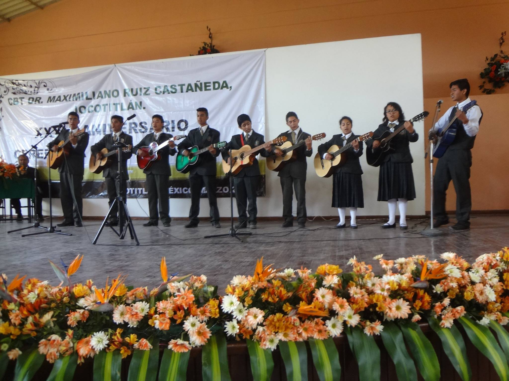
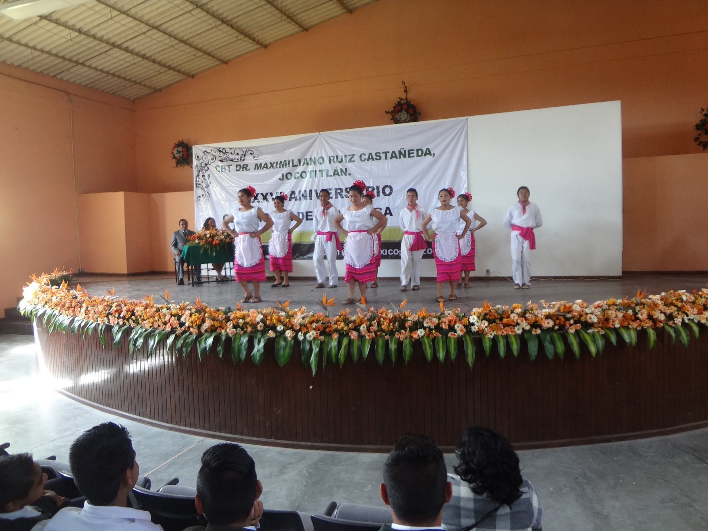

Este taller es uno de los mas representativos de la institucion puesto que es uno de los que mas eventos oficiales tiene, convirtiendose asi en el mas conocidos y queridos por las autoridades de la institucion. Para que los alumnos integrantes puedan ser liberados de servicio ocial los alumnos deben asistir a todas las practicas y eventos organzados. La banda de guerra toca en las ceremonias de carater oficial como honores,clausuras y aperturas como el aniversario de la institucion
El valor academico que posee el taller de banda de guerra es que ellos no estan sujetos a realizar las practicas de servicio social a partir del cuarto al quinto semestre, cosa a la cual los demas alumnos si estan sujetos a realizar para poder titularse en la instititucion
Rondalla es uno mas de los talleres que la institucion maneja, siendo tambien una extension de casa de cultura los integrantes deben asistir a los eventos que esta organiza, para que sean liberados de servicio social. Es para todos los jovenes interesados en la musica. Consiste en un pequeño grupo que toca musica de guitarra en generos populares mexicanos.
Como los demas talleres, los integrantes de rondalla no estan sujetos a servicio social
DANZA.El taller de danza esta conformado mayormente por alumnos de primer y segundo grado y bailan musica poular mexicana. Este taller participa en eventos tanto dentro y fuera de la escuela en los cuales hacen demostraciones junto con demas conjuntos de danza de otras instituciones.
Como los demas talleres, los integrantes de danza no estan sujetos a servicio social, pero es necesario que se presenten a todas sus practicas y eventos para poder ser liberados en este ambito escolar